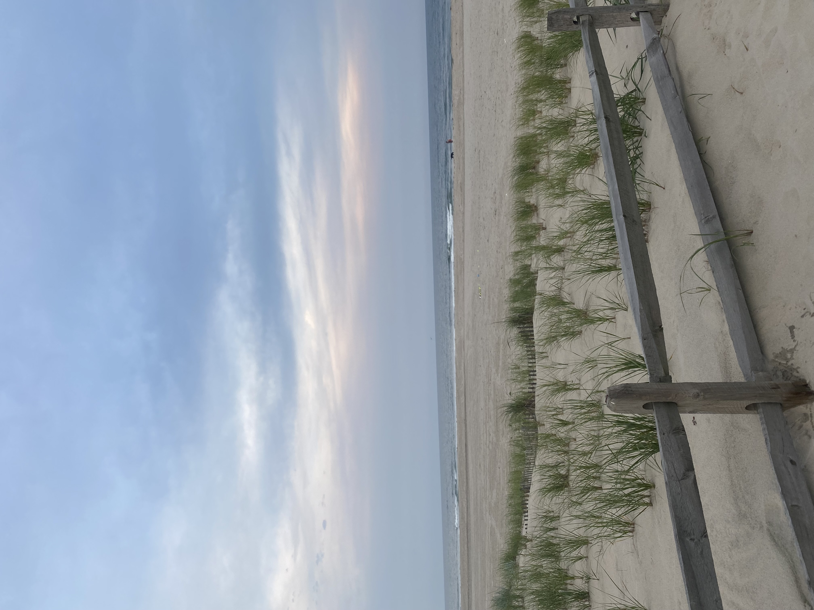
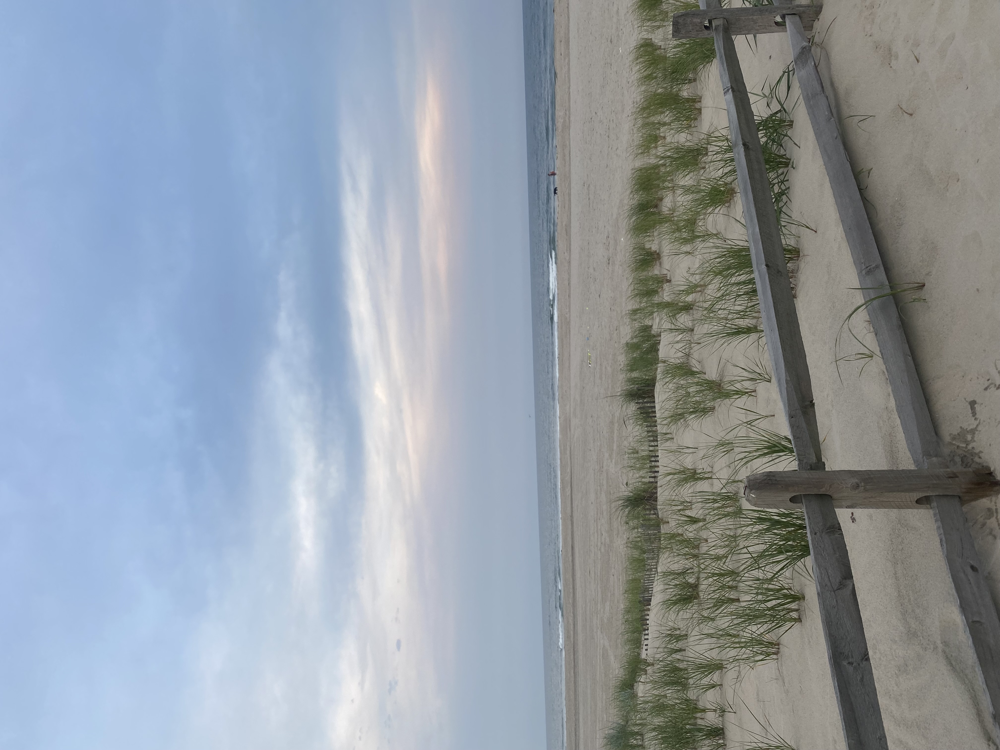
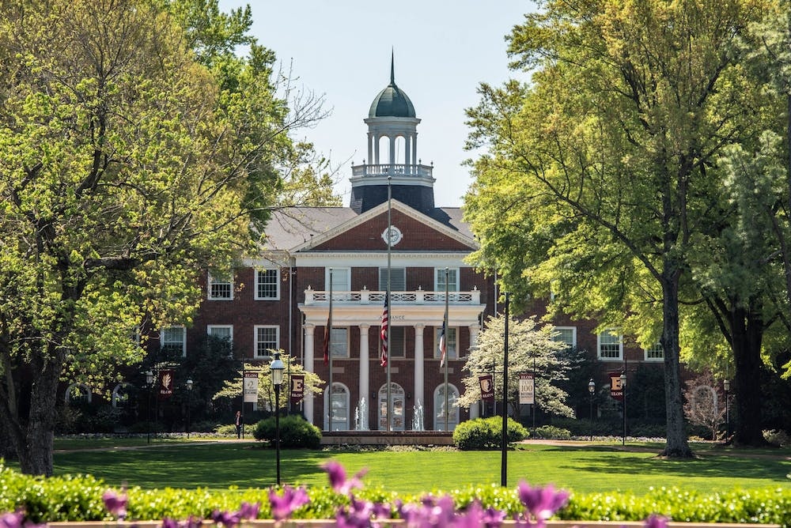
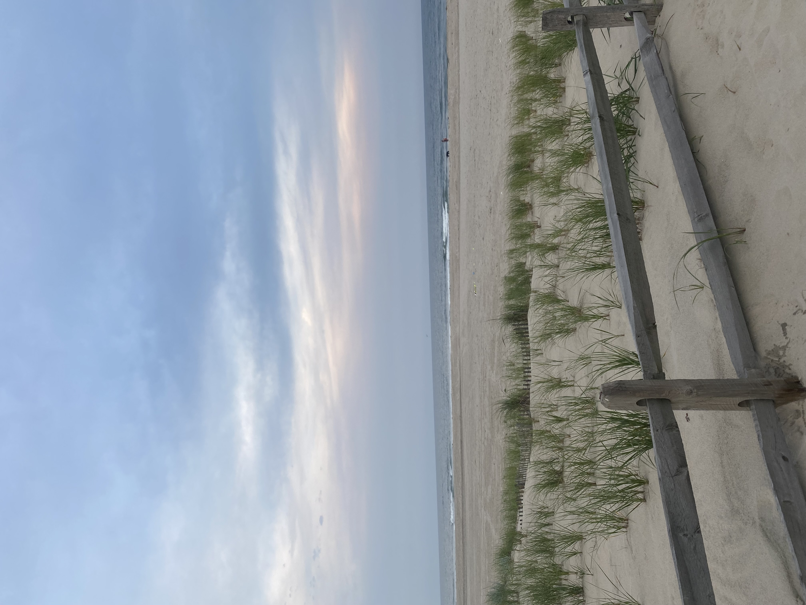

My Travel:
My favorite places I have traveled have been Amsterdam, The Netherlands, Paris, France, and my annual summer vacation to Ocean City, New Jersey.
 

We work in support of St. Jude Foundation through bi-annual philanthropy events to provide aid through fundraising. This fundraising will go towards research to help children at St. Jude Children's Research Hospital. Our most popular philanthropy events include Delta House of Pancakes an all you can eat pancake dinner, Sincerly Yours a letter writting campaign, and Dunkin' Delta's a basketball event.
Post content on Instagram, Facebook, and Twitter updating on our new stories out daily.
My favorite places I have traveled have been Amsterdam, The Netherlands, Paris, France, and my annual summer vacation to Ocean City, New Jersey.

Every year since I was born my family has gone to Ocean City, New Jersey each summer. It is my favorite place of all time to go to, it reminds me of my childhood and brings me comfort. My great aunt and uncle used to own a house which brought together so much of my family, however sadly my great uncle passed away and they had to sell the house. However, we rent a house every year and still get to see extended family. I get to stay with my aunt and cousins. It is by far my favorite week of the entire year getting to go and relax at the beach.